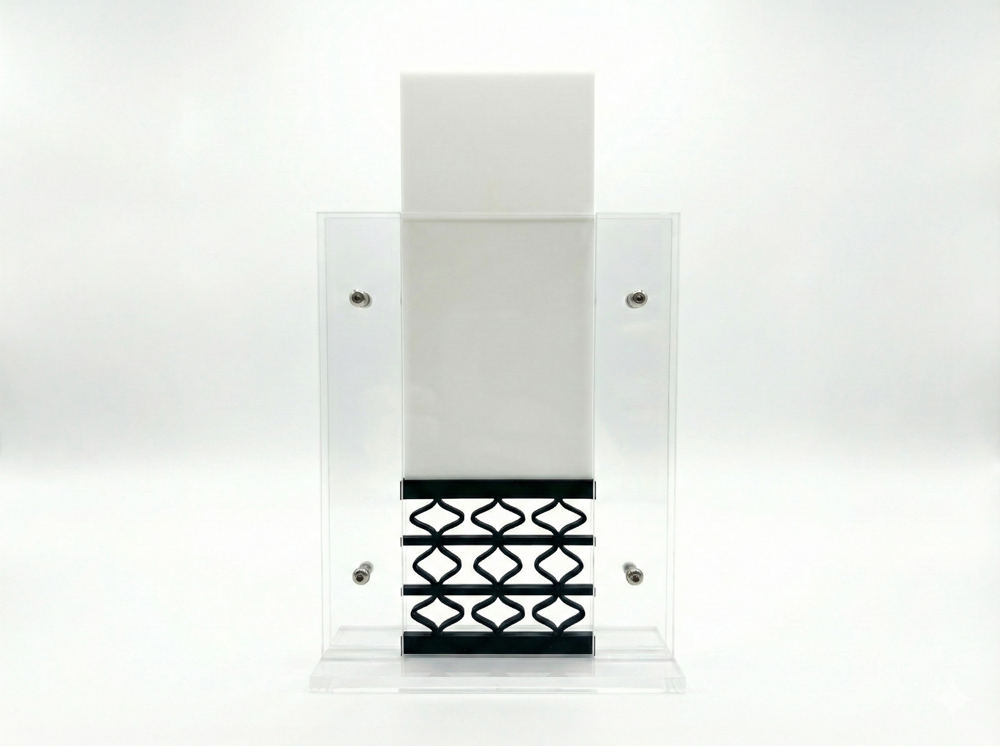
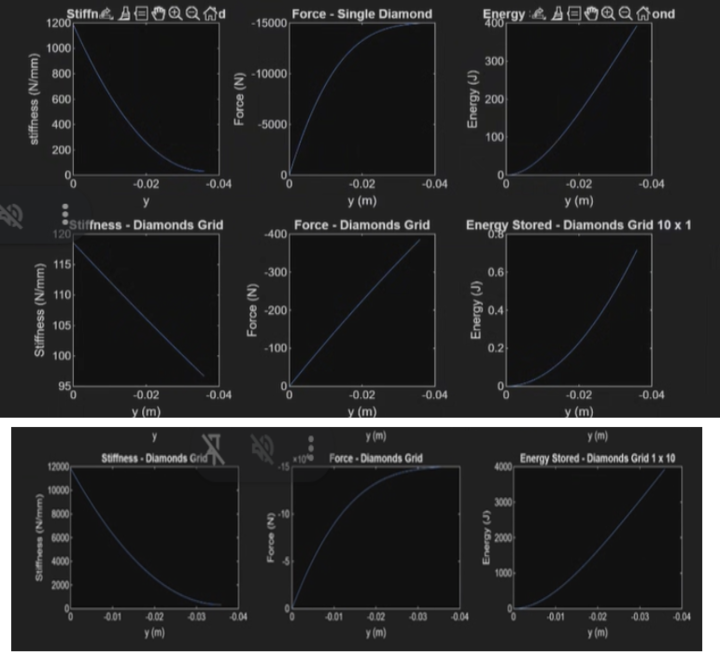
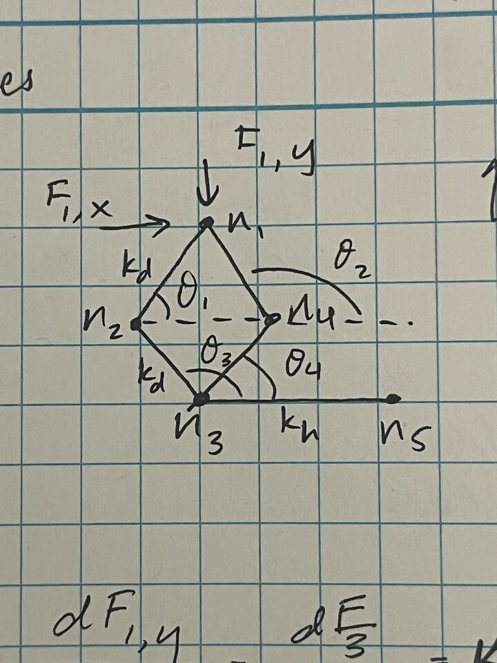
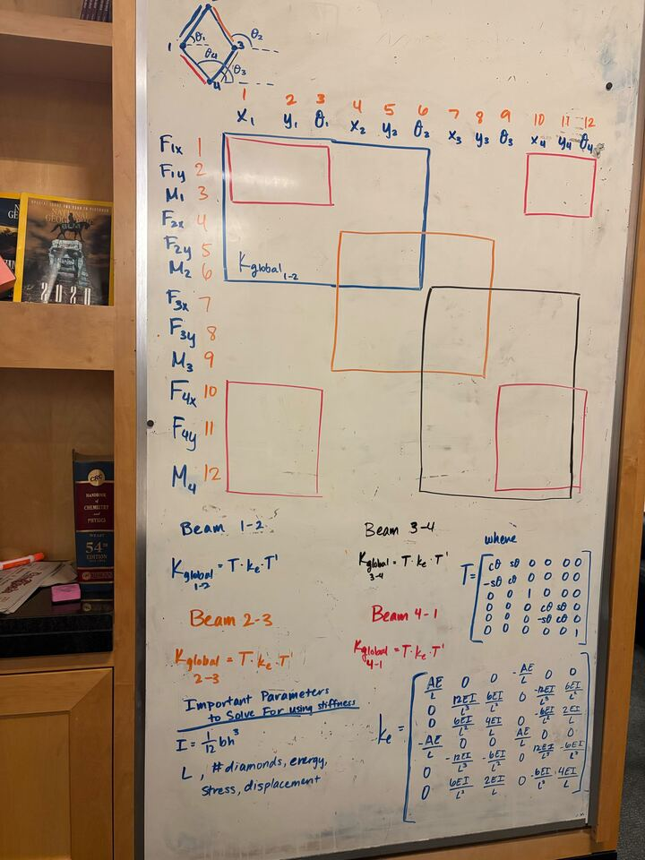

selected project
CRASHPAD
Impact & compliant design — A mechanism exploring controlled deformation and energy absorption.

The Challenge
You are charged with engineering and building a proof-of- concept prototype of a 2½D monolithic, soft-stop device to maximize energy absorption for over the distance the stop acts, e.g. deceleration zone. The concept utilizes an array of linear compliant elements, with their end nodes connected to each other at a rectilinear grid of points. Your aim is to report to ASML on the feasibility of this concept for use in mitigating the impact during a ‘crash’ event for an ASML stage.
The Design
The Process



Reflection
4/5 mechanisms done. At this point, the class is getting slightly more repetitive and my team and I have a good rhythm going. I liked using stiffness matrices as a concept too, and it was really fun when it finally clicked. Of course, the math and the real world results don't always match up.
← Return to My Projects